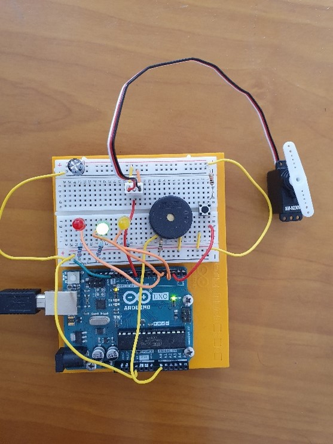

EMG Driven GUI
This was a project I did as part of a Summer Scolarship . I was the sole creator/developer of the project when I was learning Arduino/C++ and processing.
The goal of the project is to built a GUI that activates the movement of a servo motor after the sensor detects a muscle movement.
It proived also a tracking of the muscle signals.
Technologies:
- - Arduino/C++
- - Java/Processing
- - Servo motor
- - EMG muscle (Myoware and Walfront) sensor